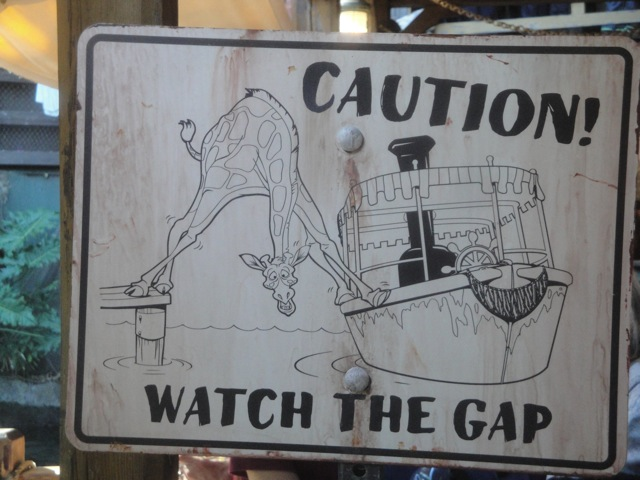
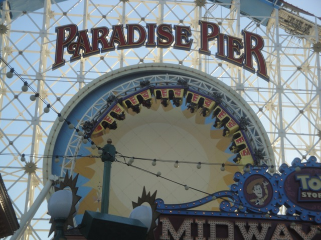
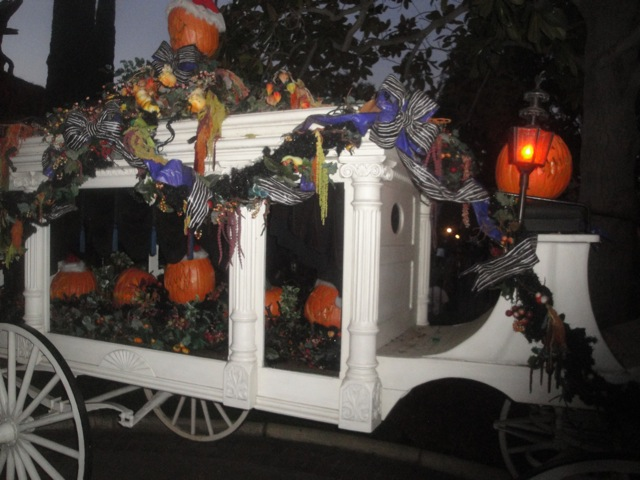

| |
Disneyland Xmas 2013
All right. So its the day before Christmas Eve and we decided to head on over to the Disneyland Resort for some more fun. And considering how I hadn't visited the park since the summer with Alex, I was overdue for a visit.
Hey random dude!!! Get your head out of the way!!! You're *this* close to blocking out the castle!!
Well Pirates of the Carribean always has a short line. Lets go do that.
Ugh. Someone puked in one of the Pirates boats. Lets see how Disney works their magic around this.
Ok. So I've been told that the skull on the headboard in Pirates is actually a real skull. I find this very hard to believe as...yeah. An actual skull in Disneyland just doesn't seem right. But everyone keeps insisting that this one is real. Can we get a verification from Snopes on this?
"Sh*t!!! They're catching onto our body dumping ground!!! Quick!!! Burn all the evidence before the cops show up!!!"
New for Disneyland is the transformation of the Jungle Cruise into the Jingle Cruise for Christmas. So of course, we had to go and check it out.
I'd love to hear this rendition of Jungle Balls...I mean Bells!!!! Jungle Bells God Dammit!!!! Jungle Bells!!!!
Time to snoop in on these letters to Santa and see what kind of stupid crap people want nowadays.

Nice Crotch Shot.
One of these is a real animal and the other is just an animatronic. Can you tell which is which?
 And aside from all the Christmas Jokes by the Cast Members, this is pretty much the only Christmas Thing on Jingle Cruise. So yeah. Its not that big, but I'm still glad I checked it out.
And aside from all the Christmas Jokes by the Cast Members, this is pretty much the only Christmas Thing on Jingle Cruise. So yeah. Its not that big, but I'm still glad I checked it out.
"Ooh!! Pretty Fire!! Must Touch!!"
"Umm...No sir. I have no idea where that gingerbread house went. *burp*"
All right. We're now in California Adventure for some more fun. =)
 Clean the snow off your car you lazy bum!
Clean the snow off your car you lazy bum!
"Got a spare wreath? One of mine just blew out while driving on the 101."
"Excuse me son, but we're looking for some reckless asshole who was last seen on Tampa Ave. Have you seen him?"
We really need more rides with the Test Track technology.
 Its amazing how much more fun this ride is by simply making a Coke Bottle float from all the airtime. =)
Its amazing how much more fun this ride is by simply making a Coke Bottle float from all the airtime. =)
 Thank god for the Single Riders Line on this ride.
Thank god for the Single Riders Line on this ride.

Still one of the best coasters that Disney has made.
"Check it out. Highest score in the entire vehicle. Who's a badass?" =)
And of course, we can't go to Disneyland at Christmas without checking the Nightmare Before Christmas version of Haunted Mansion.

Fun fact. Coffins are supposed to go inside those things. I learned this random fact from Pioneer Village @ Lagoon as that place is not only awesome, but educational as well.
"Thank you so much Jack!! It's just what I've always wanted!!! You're the best Santa ever!!" =)
Here's a tip for you Disneyland. When one of your big rides like say, Indiana Jones, stops playing the music, the lights turn on, and the ride itself just stops and starts for the last third, you'd want to call it in 10-7. Just my advice.
 Finally, our Space Mtn fastpasses are now valid. YAYS!!!!! =)
Finally, our Space Mtn fastpasses are now valid. YAYS!!!!! =)
The good folks at NASA want to congratulate you guys for volunteering to demonstrate the harmful effects of cosmic radiation on the human body. Your sacrafice will benefit all of mankind as we prepare for a manned mission to Mars in the 2030s.
News flash. Riding Matterhorn Criss Cross style reduces a lot of the leg room problems (at least for me).
Come back!!! We don't bite!!! *fingers crossed*
One Disneyland Employee suggested that we eat at Plaza Inn, a place we had never eaten at before. And considering how I'm a guy who likes to try new things, I decide to give it a go. Now its one of my least favorite resteraunts in the Disneyland Resort. Sorry, but I'm just a fan of those cafeteria style resteraunts.
May not be a big fan of Small World, but I will admit that I love all the lights it has at Christmas time.
Gotta be honest. 2013 was pretty mediocre. More than ready to flush it out and make 2014 awesome!!!
 We were waiting to see the Christmas Fireworks. But the fireworks ended up getting cancelled due to wind. On the one hand, there was barely ANY wind at all. Like 3 mph at the most. So that was really frustrating. But on the other hand, I know I'm totally evil for thinking this, but I found everyone upset at the show to be hilarious and was laughing (in my head) at them being upset. Well it was a great day at Disneyland and a great way to wrap up 2013. Hope to see you all and provide many more great updates in 2014. =)
We were waiting to see the Christmas Fireworks. But the fireworks ended up getting cancelled due to wind. On the one hand, there was barely ANY wind at all. Like 3 mph at the most. So that was really frustrating. But on the other hand, I know I'm totally evil for thinking this, but I found everyone upset at the show to be hilarious and was laughing (in my head) at them being upset. Well it was a great day at Disneyland and a great way to wrap up 2013. Hope to see you all and provide many more great updates in 2014. =)
Home
|